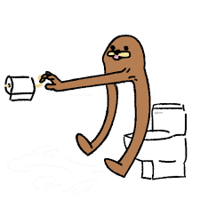
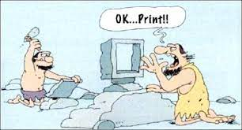

CS Student, Product Support Engineer
I'm Matthew Vinson, a third-year computer science student at the University of South Carolina. I'm very passionate about programming, always challenging myself and pushing myself to take on bigger projects. I’ve been programming since my sophomore year in High School, starting off with simple java objectdraw games in CP1, then the introduction to algorithms and data structures in AP computer science, which lead me to pursue computer science in college. Currently, I’m a Linux Product Support Engineer Intern at SIOS Technology corporation, assisting customers deal with issue they may encounter with SIOS’s high-availability server clustering software. Outside of computer science, I enjoy getting lifting, jiu jitsu, and PC games. I will try my hardest to update this portfolio with my latest projects/announcements.
This is my pinned project
This is my project im working on
I was a Customer support engineer for SIOS Tech. I was responsiple for stuff and things.